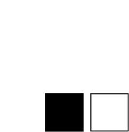
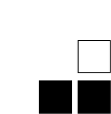
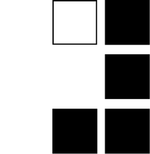
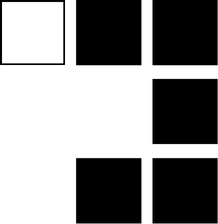
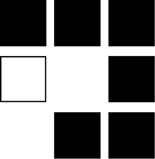
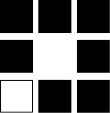
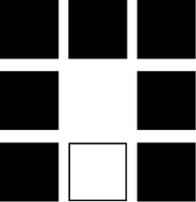
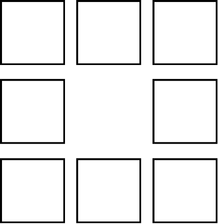

１
目が覚めると知らない天井だった。
固く冷たい床を背中で感じながら、眼球だけを動かして左右を確認する。人の気配はなく、音も何も聞こえない。
ゆっくりと立ち上がり、部屋全体を見渡す。
真白い部屋。壁、天井、床全てが白で覆われ、それ以外何もない立方体の空間。
世界から白以外の全ての色が奪われたかのような異様な光景だった。
白い部屋を歩き回ると、中央付近に何かが落ちていることに気付く。真白い紙片だった。紙片を手に取り、目を通す。
かぬき
狸
ただ、そう書いてあるだけだった。
自分がなぜ、こんなところにいるのかわからなかったが、文字の違和感とすべきことはなぜかすぐにわかった。
謎解きでいう「たぬき問題」、その初歩の初歩ともいえる問題だった。違和感は抜くべき『た』がないこと。
『ぬ』の三文字を何気なくなぞると紙片の文字が変わった。
かたき
狸
２
『かき』と答えを叫ぶと、勢いよく扉が開いた。
この部屋にいても埒が明かないと、あなたは謎の書かれた紙片を捨てて、次の部屋に移動した。
＊
次の部屋は、最初の部屋とは異なり、壁面ごと、黒、青、緑と色が変わっている。
部屋の中央には高めの丸テーブルがひとつあり、その上にタブレット端末が置かれている。
タブレットを開くと、画面に文字が表示された。
【ルール説明】
ここは検閲世界 Rewrite World。
あなたがこの世界から帰還するには、
この世界の謎を解かなくてはならない。
ただし、謎には修正箇所が必ずあり、
修正箇所を特定しないと謎は解けない。
あなたにはそれを特定する能力がある。
修正箇所は、一つの謎につき一箇所
（例：１単語、１文字、１記号）。
あなたが何者かは答えが導いてくれる。
全ての謎を解き、
世界の秘密を解き明かせ。
何も思い出せないが、この世界のルールはわかった。
謎を見つけ、修正箇所を特定し、謎を書き換え、答えを導く。手間の掛かる手順だが、それが示された世界のルールのようだ。
タブレットの画面が切り替わり、謎が映し出された。
黒の１
赤の３
緑の５
今あなたは部屋の中央で謎を解いている。
左手側には最初の部屋に通じる扉があり、壁面は白。後ろは黒い壁。中央に数字の１が白抜きで書かれている。右手側には青い壁、中央に白抜きで数字の３。正面には緑の壁、中央に白抜きで数字の５が書かれている。
あなたは部屋をよく見て回り、タブレットの謎の修正箇所について考え、結論にいたった。
を に修正すれば、謎が解けるはずだ。
３
黒=BLACKの１文字目は「B」、赤=REDの３文字目は「D」、緑=GREENの５文字目は「N」。
それぞれ拾うと『BDN』となるが、これでは答えにならない。
そこで壁の色と謎が対応関係にあること気付くと、赤を青に変えれば良いと導ける。
青=BLUEの３文字目の「U」を拾うと、答えは『BUN』になる。ぶん、文、分、何を指しているのかはわからないが、扉が開いたということは正解のようだ。
＊
次の部屋は最初の部屋と同じく白い、真四角の部屋だった。入った扉を開けたまま、部屋の中央まで来ると、タブレットに新たな謎が表示される。
にきし⇔さかな
かさた⇔ちしき
ひも⇔？
へぬ⇔ふね
手掛かりを探すために部屋を見て回ると、それぞれの壁の真ん中付近に上向きの矢印、下向きの矢印、右向きの矢印をひとつずつ見つけることができた。左の矢印は見つからない。
謎にも左の矢印だけがないが、何か関係あるのだろうか。
あなたは何かに気付き、次の行動を取った。
と る。
４
答えは「ごじ」です。
５
答えは「よはく」です。
６
答えは「とる」です。
７
答えは「きごう」です。
８
『あなた自身が答え。あなたが”えと”のとき 四角を埋め、数字読め。導かれた言葉を入力』
９（１）
どうして忘れていたのだろう。あなたはとある出版社で校閲・校正の仕事をしている校閲者だ。
なぜ、こんな世界に迷い込んだのかわからないが、一刻も早く元居る場所に帰らなくてはならない。
この最後の扉を抜ければ、何か変わるだろうか。しかし、あなたは嫌な予感しかしていない。
あなたは校閲者。
選択肢から不要なものは削除し、空欄を埋めよ。
この世界は【 】の【 】
選択肢：しゃ / しゅ / しょ / うせつ / させつ / なか / そと
１０
あなたはこの世界の正体を突き止め、自分が何者か解き明かした。
帰還のためにすべきことを考えよう。
１１
タブレットの上部に常に表示され続けていた、検閲世界の検の文字を押す。
検の文字が校に変わり、校閲世界に変わる。
ここは、謎が検閲された世界ではなく、出版前の小説の原稿の中、つまり、校閲前の世界だったということだろう。
原稿には誤字や誤植がつきもので、校正、校閲を行い、出版できるかたちに整えていく。
校閲者のあなたは、この世界の誤りに気付き、謎を解いていった。
『検閲』された世界は『校閲』された世界に書き換わった。
しかし、まだこの世界から帰還は許されないらしい。
タブレットには最後の謎が表示された。
■を■にし、
世界を再構築せよ。